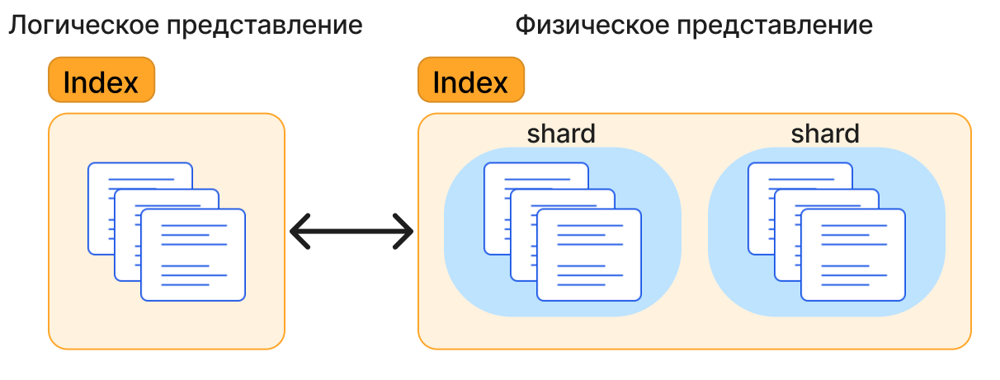
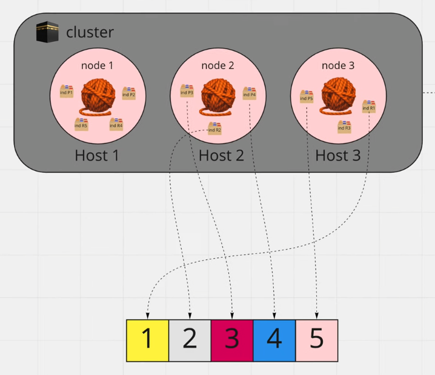

ElasticSearch
Elasticsearch¶
Введение¶
Elasticsearch - поисковой движок, входящий в состав ElasticStack, набора инструментов для работы с большими объемами данных. Используется для хранения, поиска и обработки информации. Находит широкое применение в задачах, связанных с анализом логов, поиску по тексту, мониторингом систем и в системах рекомендаций.
Состав Elasticsearch¶
Elasticsearch включает в себя:
- Elasticsearch -- хранение, индексация, поиск и обработка данных;
- Kibana -- визуализация данных;
- Logstash -- централизация данных по событиям;
- Beats -- сбор и передача данных в Elasticsearch;
- X-Pack -- мониторинг, уведомления, защита.
Виды баз данных¶
Базы данных можно разделить на два основных типа, каждый из которых имеет свои особенности:
- Реляционные (SQL) -- хранят данные в формате таблиц, они строго структурированы и связаны друг с другом;
- Нереляционные (NoSQL) -- хранят данные в виде документов, где каждый документ может иметь свою структуру, что обеспечивает большую гибкость и масштабируемость.
Elasticsearch относится к NoSQL базам. Хранение данных происходит с помощью JSON документов.
Преимущества Elasticsearch¶
- Горизонтальное масштабирование -- Elasticsearch легко масштабируется путем добавления новых узлов в кластер;
- Высокая производительность -- Elasticsearch обеспечивает высокую скорость поиска и индексации данных;
- Реальное время -- поддержка реального времени позволяет получать данные практически мгновенно после их индексирования;
- Гибкость запросов -- поддержка сложных запросов и агрегатов, что делает его подходящим для аналитики и бизнес-анализа;
- Поддержка полнотекстового поиска -- оптимизирован для работы с текстовыми данными, позволяя выполнять поиск по содержимому текстовых полей с учетом морфологии, синонимов и других нюансов.
Elasticsearch имеет большое количество настроек полнотекстового поиска. Можно учитывать опечатки, окончания, количество совпадающих слов и другое.
Основные понятия¶
Документ¶
Документы -- это базовая единица информации, которая может быть проиндексирована в Elasticsearch и выражена в формате JSON. В Elasticsearch документ может быть любые структурированные данные, закодированные в формате JSON. Этими данными могут быть такие вещи, как числа, строки и даты. Например, документ может представлять собой статью энциклопедии или записи журнала веб-сервера.
Каждый документ сохраненный в индексе (index) имеет тип (type) и идентификатор (id).
Документ
Индекс¶
В Elasticsearch индекс (index) -- это логическое хранилище документов, которые объединены одним смыслом.
Такое хранилище является по сути коллекцией, которая оптимизирована под поисковые запросы.
Содержимое полей документов сканируется и сохраняется в соответствующие структуры данных.

Узел (node)¶
Узел (или node) -- отдельный сервер или экземпляр Elasticsearch, который является частью кластера.
Ноды взаимодействуют между собой для хранения, обработки и поиска данных.
Они являются ключевыми компонентами, обеспечивающими распределённую природу Elasticsearch.
Назначение ноды:
- Индексация документов;
- Поиск документов;
- Агрегация документов;
- Выполнение аналитических запросов;
Один узел может выполнять несколько ролей.
Кластер¶
Кластер -- объединение одного или нескольких узлов. Если в кластере несколько узлов, то индексы будут распределены по этим узлам внутри кластера.
Фрагмент (shard)¶
Фрагмент (shard) -- часть индекса, распределенная по нескольким узлам в кластере.
Шарды позволяют эффективно использовать ресурсы каждой ноды: дисковое пространство и вычислительную мощность.
После создания индекса количество фрагментов изменить невозможно.

Репликация¶
Репликация -- процесс создания копий (реплик) основных фрагментов (shard) на разных узлах (node)
для повышения доступности данных и обеспечения отказоустойчивости кластера.
P - главный шард
R - реплицированный шард
CRUD¶
# получить список доступных команд по категории
GET _cat
# получить информацию по шардам
GET _cat/shards
# получить информацию по индексам
GET _cat/indices
# получить первые документы в индексе
GET <index>/_search
# удалить индекс
DELETE <index>
# создать индекс
PUT <index>
# получить информацию по индексу
GET <index>
# создать индекс с определенным количеством фрагментов
PUT <index>
{
"settings": {
"number_of_shards": 5
}
}
# вставить документ
PUT <index>/_doc
{
"key": "value"
}
# добавить новое поле
POST <index>/_update/<UUID>
{
"doc": {
"new": 2
}
}
# получить документ по id
GET <index>/_doc/<UUID>
# узнать шард документа
GET <index>/_search_shard?routing=<UUID>
# удалить документ
DELETE <index>/_doc/<UUID>